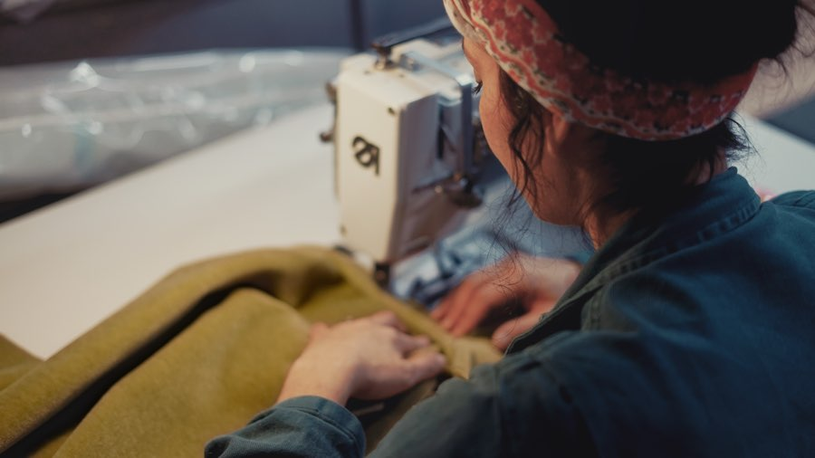
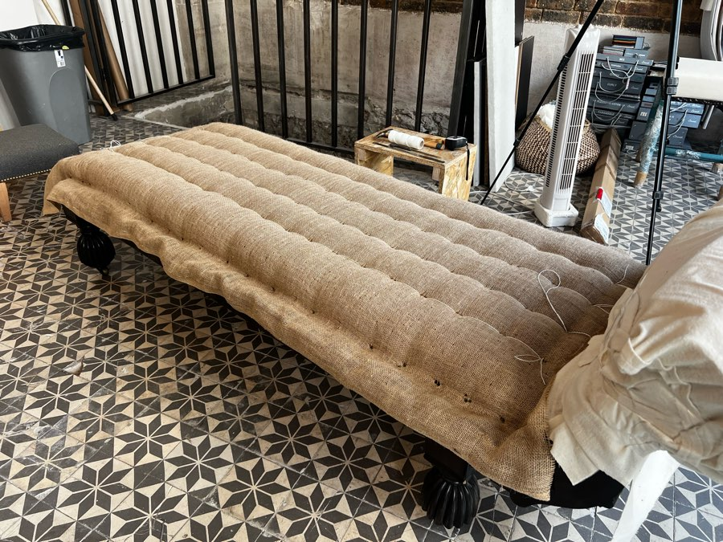
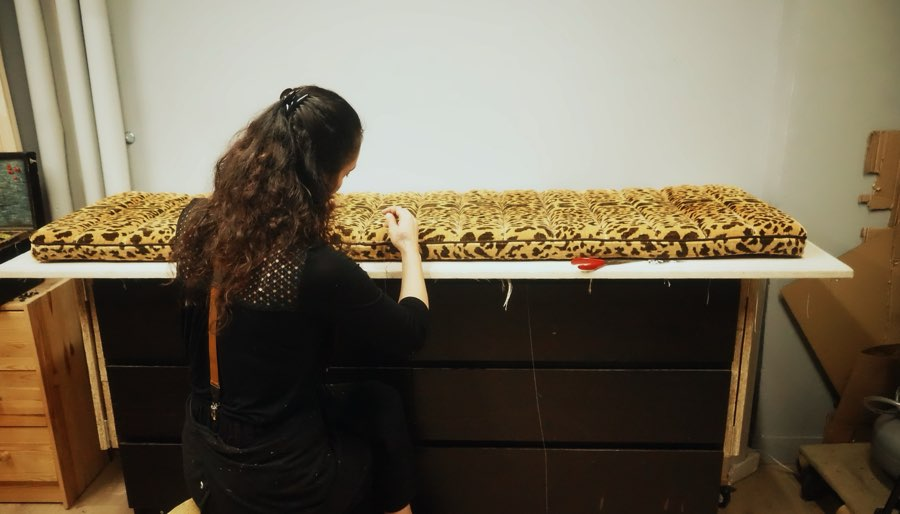

Nos engagements
Chaque pièce qui passe par l'atelier a déjà une histoire. Notre rôle est de la prolonger, parfois de l'écrire à nouveau, avec la même attention pour le détail, le choix des matières et la justesse du geste.

La formation
Lirayen Rojas-Diaz est diplômée du CFA d'ameublement La Bonne Graine. Elle s'est ensuite formée auprès de maîtres tapissiers et de maisons reconnues.

Les techniques
Sangles, ressorts, crin animal, finitions à la main : un siège ancien est refait comme il a été construit. Les méthodes contemporaines s'y ajoutent quand la pièce le demande.

Le suivi
Du devis à la livraison, chaque projet se construit en dialogue : vos besoins, les matières, les coloris, le calendrier.
Un siège à refaire, des rideaux à créer ?
Le devis est gratuit, la réponse arrive sous 48 h ouvrées.